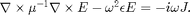

maxwell_solve
Solve the electromagnetic wave equation.
Contents
Syntax
- [E H] = maxwell_solve(grid, eps, J) returns the E- and H-fields of the solution to the electromagnetic wave equation.
- [E H] = maxwell_solve(grid, [eps mu], J) same as above except for mu ~= 1.
- ... = maxwell_solve(..., 'vis_progress', vis_opt) controls the progress visualization where vis_opt can be none, plot, text, or both. Defaults to both.
- ... = maxwell_solve(..., 'E0', E0) allows one to control the initial value of E. Defaults to E0 = 0.
- ... = maxwell_solve(..., 'max_iters', n, 'err_thresh', err) sets the termination conditions for the solve. Defaults to n = 5e4 and err = 1e-6.
Description
maxwell_solve is the primary function in Maxwell in that it solves the electromagnetic wave equation

It's unique characteristic is that it offloads the computation to a remote server, and then downloads the solution fields once available. This is typically very advantageous for 3D simulations which generally are not feasible to solve on typical desktop computers. However, if a 2D simulation is detected, the solution will proceed locally.
Although the solve proceeds remotely, near-complete control of the relevant parameters is provided. Specifically, since the remote server uses an indirect solution method, the maximum number of iterations ('max_iters') and the error threshold ('err_thresh') which together determine the termination conditions for the solve, are available for the user to tweak.
Source code
function [E, H, err] = maxwell_solve(grid, eps_mu, J, varargin) % % Initiate simulation. % [cb, vis_progress] = maxwell_solve_async(grid, eps_mu, J, varargin{:}); % % Monitor simulation progress. % while ~cb(); end % % Obtain solution fields. % [~, E, H, err] = cb();